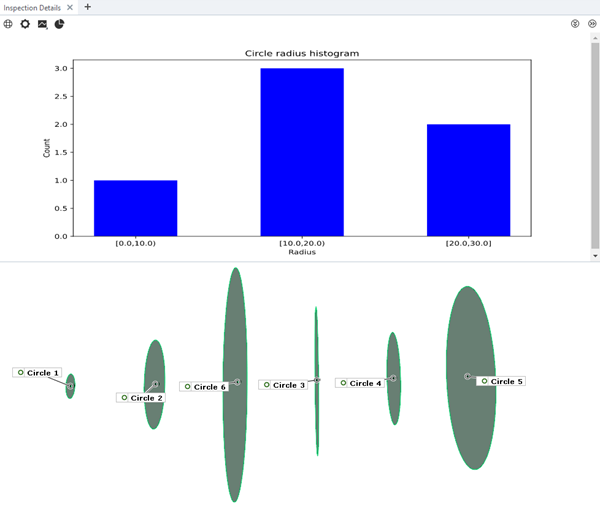
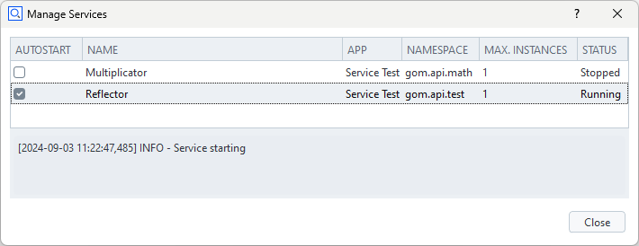

What’s New
Link from App to external documentation

ZEISS INSPECT 2025 allows to add a help button to App dialogs providing a web link to external documentation. See Documenting Apps — Link to external documentation for details.
Scripted Diagrams

Scripted diagrams have been added as a new feature in ZEISS INSPECT 2025. Scripted diagrams allow visualization of data provided by scripted elements in a very flexible way. More details can be found in Using scripted diagrams.
Services

In ZEISS INSPECT 2025, services have been introduced. A ZEISS INSPECT service is a Python script running continuously in the background, which exposes API functions to other scripts. Services can be distributed via Apps and can be used as computation kernels or callback targets. See Using services and Service API for details.
Testing Apps with dialogs
Did you know that you can test Apps with User-defined Dialogs non-interactively?
See How-to: Testing Apps — Testing Apps with Dialogs for a detailed explanation.
Inserting a file selection dialog into a script

With ZEISS INSPECT 2025, it is possible to add a dialog for selecting files or folders by using RMB ► Insert ► File… in the script editor. See Selecting a file or folder for details. This serves as a shortcut to creating a User-defined dialog if only a single file widget is needed.
ZEISS INSPECT 2025 Released
We are happy to announce that ZEISS INSPECT 2025 has been released. As always, you will find a multitude of new features and improvements. New App development related features will be presented here shortly.
Selecting elements in scripts
You have recorded script commands operating on groups of elements selected in the Explorer? The resulting gom.ElementSelection() seemed cryptic? You wonder how to access the selection? Selecting elements in scripts provides an insight.
Update of Internationalization Tools App
Did you know that you can easily provide your App’s user interface in multiple languages? See Localization of Apps for details.
An updated version of the App ‘Internationalization Tools’ is now available in the ZQS Store.
How can I access the coordinates of a selection on a mesh?
The FAQ article How can I access the coordinates of a selection on a mesh? explains how you can get the vertices, normals and triangles of parts of a mesh which have been selected interactively.
How do I use a C# / .NET library in an App?
Please find the new article How do I use a C# / .NET library in an App? in the Frequently Asked Questions.
Running App tests with code coverage
The quality of Apps can be enhanced by thorough testing. Sometimes not only the test results, but also the amount of code covered by the test suite is of interest. This is addressed by the new section Running App tests with code coverage of the chapter Testing Apps.
Using an additional Python GUI library
The App Editor and the Dialog Designer provide an easy and convenient way of adding a graphical user interface to your App — see User-defined dialogs. GUIs which are created this way seamlessly integrate into the look and feel of ZEISS INSPECT. However, there are reasons why using a separate Python GUI library might be preferred. Using an additional Python GUI library gives a brief overview on use-cases, options and installation.
Working with stages
Stages are used in ZEISS INSPECT for comparing inspection results of the same nominal part but different actual meshes. In ZEISS INSPECT Correlate, stages are used for 3D image series. Working with stages provides some basic information about using stages in Apps and shows typical applications of Python scripts for working with stages.
Using Python wheelhouses
In most cases, Python packages — also known as Python wheels — are installed as described in Using the App Editor - Installing Python Packages.
In case this does not work, Using Python wheelhouses can provide a solution.
Scripted elements examples
Examples for all types of scripted actual elements have been added to App Examples - scripted actuals. You might also want to review the basics in Scripted elements or to read details in Scripted elements API.
Software and script starting options
There is a new page HOW-TO GUIDES - Software and script starting options, which deals with various ways to start ZEISS INSPECT and optionally execute a script.
Project Keywords
There is a new section HOW-TO GUIDES - Project keywords handling. Project keywords can be used for storing meta information.
Frequently Asked Questions
There is a new section HOW-TO GUIDES - Frequently asked questions with contents from the ZEISS Quality Forum, Tech Support and Development department.
New API Examples
reference_points_and_mesh_data
This example demonstrates how to access reference points in a measurement and meshes from Python.
point_pixel_transformations
This example addresses a fundamental topic of photogrammetry - transformation between 2D pixel coordinates in a measurement and a 3D point coordinate and vice versa.
Welcome!!!
Welcome to the ZEISS INSPECT 2023 App Python API News Feed. Here we will post notifications on website updates and other project news.